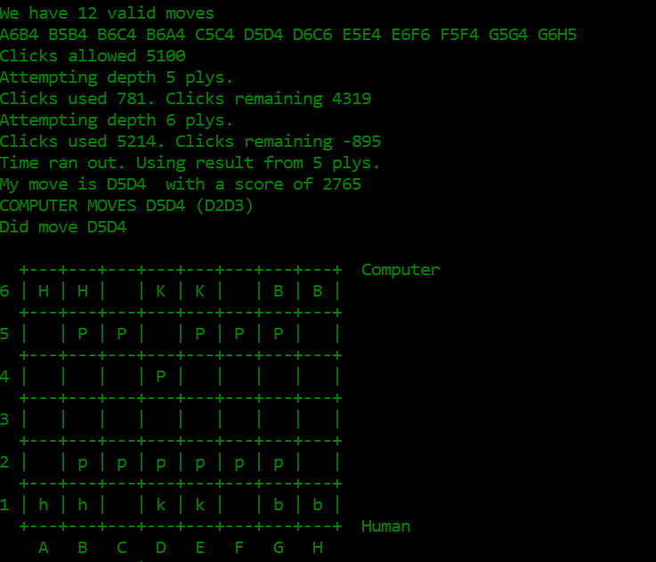
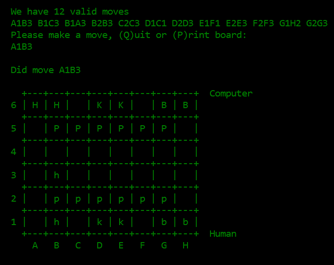
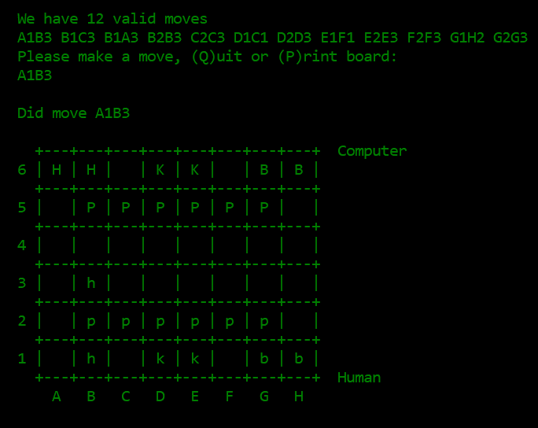

Ryan Bartoli
Index | Projects | Activities | ResumeCooper MinMax program
Adversaral search
A C++ MinMax AI that can play special rule set of chess for a class AI tournament. My program utilized the Min Max algorithm in addition to iterative deepening, alpha beta pruning, and a "Conserve Moves" heuristic.
If you would like to play against Cooper, you can download "Cooper" here. It will come in the form of a Windows executable which you may prefer run from a command window since the app closes at the end of the game.
The setup
During the time of taking our college's artificial intelligence class; the second class project gave us a month to develop an adversarial search AI to play a specific game and then compete with classmates in an AI competition after the submission date. The results of this competition did not affect our grades and mostly was for point of pride and showcase of mastery of the subject. The way that semester panned out, there was three weeks during the semester; where our professor went over the general theory, and then one week during the spring break to develop and finish the project. We were allowed to develop our adversarial search in whichever coding language we wanted, as long as it implemented the Min Max algorithm and at least attempted to develop additional optimizations. When I submitted my project for the competition I dubbed it under the name Cooper.

General Layout of the board:
K, B, H, P are the computer's Kings, Bishops, Horses, and Pawns (moving DOWN the board).
k, b, h, p are the human's Kings, Bishops, Horses, and Pawns (moving UP the board).
Language Selection
Since our school primarily taught Java and some aspects of Python, most of the class decided to go down those paths to develop the project. Given knowledge on the subject, however it appeared to me that to more effectively utilize the Min Max algorithm you needed to minimize the overhead the chosen language had over the program, otherwise it would get bogged down. To counter that, I decided to pick up C++ to minimize the need for objects and more effectively manage memory, so that the MixMax algorithm could reach deeper plys and thus more effectively plan it’s moves out. Being that it was my first time designing in C++, it proved to be a challenge that required that full extent of those four weeks. This included coming to campus during the entirety of spring break to iron out its design.
Optimizations
The contributing factor to the program’s success was the optimizations I implemented to improve its performance in pruning depth branches, and the development of a competitive heuristic for the game.
Iterative deepening
During class sessions we discussed the concept of iterative deepening which enabled the MinMax program to utilize a global best score as a comparison tool to determine the program should go to a deeper depth for a better score. Implementing iterative deepening to Cooper enabled it to use the global best score to reach deeper plys because it overall minimized the amount of nodes on the branches it had to check.
Above is a demonstration of how iterative deepening works with Cooper.
Integrated with a timer, up to a time limit Cooper can continue to look at deeper plys.
As we get deeper into the game, moves are decided quicker which means deeper plys can be reached.
If this feature was not included in Cooper, they would be stuck with whichever max ply depth I set, potentially handicapping its effectiveness in the late game.
Alpha beta pruning
Another method of pruning we learned about was alpha beta pruning, meant to work alongside the Min Max algorithm; it provides the adversarial search with the ability to ignore branches (which would be up to millions of nodes) that provide a worst score than previously evaluated nodes on that branch.
For Cooper, this meant it would be able utilize a local best score as a comparison tool for detecting and avoiding dead end paths, further minimizing the amount of nodes it had to check.
Heuristics
Reading the Meta
The final contributing factor to Cooper's success was its heuristic during the competition. To develop this we needed an in depth understanding of how Congress Chess was played.
One of the first things I noticed while playing was the dominating effect the politician units had on the game, because their flexibility to be used as a horse or a bishop in the right circumstances provide a lot of utility no other unit possessed. To capitalize on this, I developed a heuristic with the strategy that provided higher score returns to Cooper for moves that preserved the political units while maximized the elimination of the opponent's political units.

Above is a demonstration of how many moves horses and bishops in this game could make in the first two turns of play.
Another thing I noticed when competing against other classmates was an aggressive design in their adversarial searches, looking to close out the games quickly by rushing to capture the kings or put them in deadlock positions. To counter this, I decided to add score to moves that conserved my pieces in general as well as conserved moves. These were both lesser values than the ones I put for the politicians so their protection was a greater concern to me.
As an unintended consequence, Cooper played a conservative long game with its opponents, revealing bugs in my opponent's adversarial searches, bugs that I previously found out and eliminated from the ironing out process. For the games that were not automatically won by opponent disqualification, Cooper set the board up so that it would eliminate the opponent's politicians, block its pawns, and trap their kings. This tactic allowed me to beat AI that had greater depth ply algorithms because while I wasn't searching deeper I was making better moves, and protected my board from being rushed down. Often this would result in my AI forcing the opponent, who had not planned for a control game, to make moves to protect its units that ate at their remaining moves and ability to counter attack.

Above is a demonstration of a move I called the "Triangle Horse Move", which enabled a player to control the movement of the opponent's kings with three horses if not properly countered. Even though I did not implement additional optimizations like Killer Moves, which pre-saves game winning moves ahead of time, I added this to the heuristic, giving the computer a small score bonus if they find a move that can perform this move. A full explanation of the move can be seen down below.
Throughout the entire tournament Cooper did not break once, or make illegal moves. Its wins were enabled by the study of programming languages and utilizing that knowledge to implement their strengths further improved by selective optimization and effective use move selection heuristics.
Final scores at School AI Competition

You can find these results on Dr. Gordon's tournament results webpage.
You can find these results on Dr. Gordon's tournament results webpage.
How the game plays
Congress Chess
"Congress Chess" is a chess-like game in which each player takes turns moving one
of his/her pieces. The board is 8x6, with the left four columns being the "left wing"
and the right four columns being the "right wing".
Each player has:
Rules 2 kings, one in each wing. 6 pawns 4 politicians If a politician is in the "left" wing, it becomes a horse. If a politician is in the "right" wing, it becomes a bishop. A politician changes if it moves from one wing to another. A politician that is in the first three rows (nearest its own kings) is a "junior". A politician that is in the furthest three rows is a "senior".
When the game boots up, you are given the choice of whether Cooper or the player will go first.
Congress Chess
"Congress Chess" is a chess-like game in which each player takes turns moving one of his/her pieces. The board is 8x6, with the left four columns being the "left wing" and the right four columns being the "right wing".
Each player has:
| Rules |
|---|
| 2 kings, one in each wing. |
| 6 pawns |
| 4 politicians |
| If a politician is in the "left" wing, it becomes a horse. |
| If a politician is in the "right" wing, it becomes a bishop. |
| A politician changes if it moves from one wing to another. |
| A politician that is in the first three rows (nearest its own kings) is a "junior". |
| A politician that is in the furthest three rows is a "senior". |
When the game boots up, you are given the choice of whether Cooper or the player will go first.
General game loop
When the player decides to go first they are provided a list of valid moves they can make and are prompted to make a move.
Once a move is made, the game determines if that move either won the game.
If the game is not won by the move, it passes control over to the next player, in this case Cooper, and checks to see if Cooper is out of moves.
If the player isn't out of moves, its their turn.
On Cooper's turn, it will be provided a list of legal moves, evaluate the boardstate and make its move.
This process will repeat until either a player makes a winning move (capturing both of the opponent's kings) or a player runs out of legal moves they can make.
Should the player decide to let Cooper go first, Cooper AI will calculate its first move based on the board state and move. The player is then prompted to make a move, and the cycle continues as before.
Cooper has been tuned to be a decent competetor to aggressive adversaral AI, but is definitely beatable by human opponents who observe its patterns.
If you would like to play against Cooper, you can download "Cooper" here.
It will come in the form of a Windows executable which you may prefer run from a command window since the app closes at the end of the game.

The player goes first, provided a list of valid moves, and is prompted to make a move.

After the player makes a move the board updates to reflect that move.
When the player decides to go first they are provided a list of valid moves they can make and are prompted to make a move. Once a move is made, the game determines if that move either won the game.
If the game is not won by the move, it passes control over to the next player, in this case Cooper, and checks to see if Cooper is out of moves.
If the player isn't out of moves, its their turn.
Should the player decide to let Cooper go first, Cooper AI will calculate its first move based on the board state and move. The player is then prompted to make a move, and the cycle continues as before.
Cooper has been tuned to be a decent competetor to aggressive adversaral AI, but is definitely beatable by human opponents who observe its patterns.
If you would like to play against Cooper, you can download "Cooper" here. It will come in the form of a Windows executable which you may prefer run from a command window since the app closes at the end of the game.
The player goes first, provided a list of valid moves, and is prompted to make a move.
After the player makes a move the board updates to reflect that move.
Cooper's signature move: The Triangle Horse Move
The move begins with moving the moving of two horses across the field toward C4 and C5.
First horse
C1 to B3
B3 to C5
Second horse
B1 to A3
A3 to C4
The idea is that the first two horses will lock down A6 through D7 for the left enemy king
C4 threatens B6 and D6
C5 threatens A6 and E6
Since left side kings need to keep moving left, most adversarial AI will spend a move protecting their king within gap inbetween the two horses at C6 but then will be unable to move them again.
Meanwhile, depending on the board state, the right enemy king is likely still at the default location of E6 or have moved to F6.
To exploit this, I put a high score value on both a bishop making aggresive advances, thus encouraging the pawn to move out of the way.
Because of the special ruleset of the game, if a horse crosses into the opposite side of the board from its origin, it turns into a bishop.
Once able to move, the bishop at G1 is to move toward D4 where it will become the third horse.
G1 to D4 (becomes a horse)
D4 threatens C6 (the gap) and E6
C4 to E5 (becomes a bishop)
E5 threatens D6 and F6
Overall, the plan is for the D4 horse to eliminate the stranded C4 horse is able to react, become a bishop at E5, and eliminate the stranded